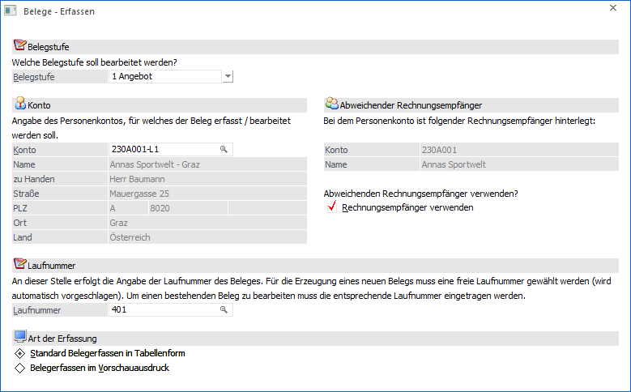

Mit Hilfe des Fenster "Belege - Erfassen", welches über den Menüpunkt…
1 WinLine FAKT
1 Erfassen
1 Beleg Erfassen
1 Quick Erfassen
… gestartet werden kann, können schnell und einfach die Grundeinstellungen für die anschließende Belegerfassung definiert werden.
Hinweis
Das Fenster wird auch bei der Anlage eines neuen Belegs aus den Programmbereichen "Belege" und "Belegmanagement" geöffnet.

Ø Belegstufe
An dieser Stelle erfolgt die Hinterlegung der Belegstufe, für welche der Beleg erzeugt werden soll. Je nach Stufe werden bei dem Druck bzw. dem Rechnen des Belegs unterschiedliche Stammdatenbereiche und Bewegungsdaten aktualisiert.
ü 1. Stufe Angebot / L.Anfrage
ü 2. Stufe Auftrag / L.Bestellung
ü Erzeugung der Rückstandsliste (Artikelbedarfsvorschau)
ü 3. Stufe Lieferschein / L.Lieferschein
ü Aktualisierung der Rückstandsliste (Artikelbedarfsvorschau)
ü Lagerupdate
ü 4. Stufe Faktura / L.Faktura
ü Provisionsabrechnung
ü Verkaufsstatistik
ü Artikel- und Kundenupdate
ü Bereitstellung der FIBU- und KORE-Daten
Ø Konto
In diesem Feld erfolgt die Hinterlegung des Kontos, für welches der Beleg erfasst bzw. bearbeitet werden soll.
Ø Abweichender Rechnungsempfänger
Wenn in dem Feld "Rechnungsempf." (WinLine FAKT - Stammdaten - Konten - Personenkonten / Interessenten - Register "FAKT") des zuvor eingegebenen Kontos ein abweichender Rechnungsempfänger hinterlegt wurden, so wird dieses Konto hier angezeigt.
Mit Hilfe der Option "Rechnungsempfänger verwenden" wird das abweichende Konto als Rechnungsempfänger gesetzt und das bisher erfasst Konto wird die Lieferadresse.
Ø Laufnummer
Die Funktion der Laufnummer ist das schnelle Übergeben eines Beleges von Stufe zu Stufe. Die Laufnummer ist dabei max. 20-stellig und alphanumerisch und wird immer automatisch mit der nächsten freien Nummer vorbelegt. Durch die Hinterlegung einer bereits bestehenden Laufnummer können natürlich auch bestehende Belege für eine Bearbeitung geladen werden.
Ø Art der Erfassung
An dieser Stelle kann definiert werden, wie in der weiteren Folge die Erfassung des Belegs stattfinden soll. Folgende Varianten stehen zur Verfügung:
ü Standard Belegerfassen in
Tabellenform
Nach der Anwahl des Buttons "Ok" wird in der Belegerfassung in
das Register "Mitte" gewechselt. Dort kann die Erfassung in Form einer Tabelle
stattfinden.
ü Belegerfassen im
Vorschauausdruck
Nach der Anwahl des Buttons "Ok" wird in der Belegerfassung
in das Register "Quick" gewechselt. Dort kann die Erfassung in Form einer
Bildschirmvorschau erfolgen.
Achtung
Die Einstellung "Art der Erfassung" beeinflusst auch den Start der Belegerfassung für das Laden bzw. Bearbeiten eines Belegs.
Buttons
Ø Ok
Durch Anwahl des Buttons "Ok" bzw. der Taste F5 wird der Beleg zur weiteren Bearbeitung in der Belegerfassung geöffnet.
Ø Ende
Bei Anwahl des Buttons "Ende" bzw. des Taste ESC wird das Fenster geschlossen und kein Beleg erzeugt.